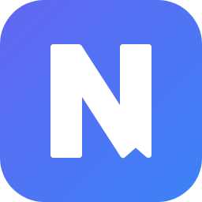

Save Link to Notion
Save Link to Notion, an extension for Chrome and Brave.
Last updated 13 November 2026.
The extension keeps your keys in your browser and sends data only to your own Notion database and, when you use an AI feature, to the AI provider you chose. It has no server of its own, collects no analytics and sends nothing to its developer.
All of it is kept in chrome.storage.local of your browser
profile and leaves it only as described below. Removing the extension
deletes it.
When you save a page: its title, address and description, your note, tags and selected text, and the addresses of the page's preview image and icon, which Notion shows as the cover and the icon of the row. With Clip full article, also the readable text and the images of the page. It goes to the Notion database you configured, through your own integration, and Notion's privacy policy applies to it.
Only when you press AI summarize or send a message in Ask AI: the page title, address and description, your selected text and your messages go to the provider you configured (OpenRouter), and its privacy policy applies to them. Nothing goes there otherwise.
The extension saves links and notes to your own Notion database and, optionally, lets you ask an AI assistant about the page you are on. The data above serves those features only.
Questions about privacy go through the support and contact details on the extension's page in the Chrome Web Store, or the developer's GitHub profile, github.com/Mysttic.